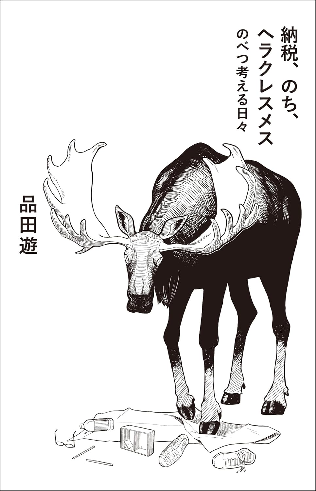

納税、のち、ヘラクレスメス のべつ考える日々
概要
ダ・ヴィンチ・恐山こと作家・品田遊が、2018年から毎日欠かさず投稿を続ける日記「ウロマガ」（居酒屋のウーロン茶マガジン）。
2000日超の投稿から厳選した記事を全文加筆修正、再構成して、エッセイからコラム、小説まで品田遊の鮮やかな表現をたっぷり味わえる超超贅沢な一冊!!!!

感想
小説、漫画、エッセイなどの様々な話が入り混じる一冊。
２行ほどで終わる話から見開き一ページを超えるような話など、さまざまな文体で書かれる話はどれも興味深く、品田遊の視点の広さを味わえておすすめ。
日記を本にしている特性上、区切って読みやすいのも良い。
ダ・ヴィンチ・恐山が好きすぎて購入したが、脳みその思考する領域が久しぶりに広がる感覚があった。